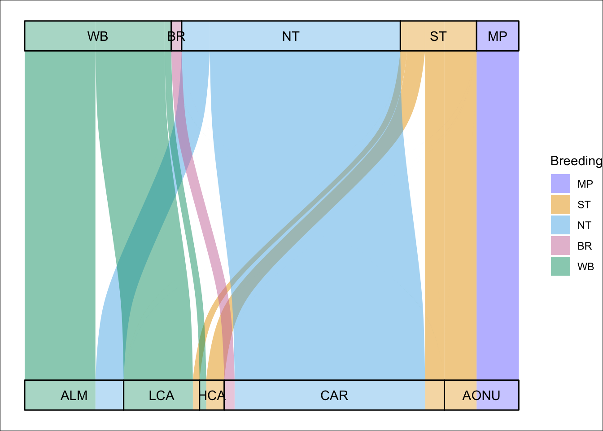
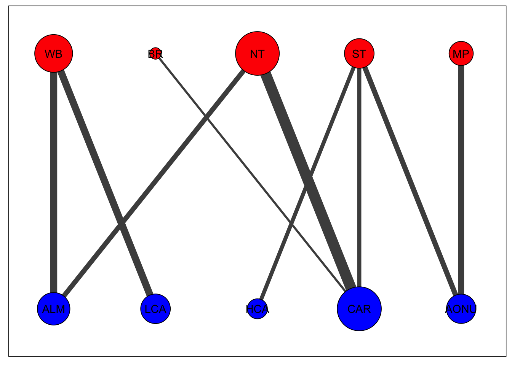

Chapter 8 Network visualization
We provide functions for basic visualization of the network (net_create() and net_draw()). A threshold can be set to remove very weak connectivity for better visualizing the network as shown below.
bnode_names <- c("WB", "BR", "NT", "ST", "MP")
wnode_names <- c("ALM", "LCA", "HCA", "CAR", "AONU")
net <- mignette::net_create(mignette::amre_conn,
node.names = list(bnode_names, wnode_names))
#set the display size range for nodes (min and max), default 1-10
net$display_par$node_size_scale<-c(5,20)
#set the display size range for edges (min and max), default 1-10
net$display_par$edge_size_scale<-c(1,5)
plot(mignette::net_draw(net))
In this visualization, node size corresponds to the amount of connectivity with that population and edge size corresponds to the amount of connectivity between the populations. By default, breeding populations are in the top row (red) and nonbreeding populations are in the bottom row (blue).
We also can change the connected_tol threshold in the net_create function to not output extremely weak connectivity. For example, the plot below removes connectivity less than 0.02:
net <- mignette::net_create(mignette::amre_conn,
node.names = list(bnode_names, wnode_names),
connected_tol = 0.02) # threshold
net$display_par$node_size_scale<-c(5,20)
net$display_par$edge_size_scale<-c(1,5)
plot(mignette::net_draw(net))
This sums up the basics of creating and visualizing a migratory network. We encourage users to explore and build upon the visualization tools we provide (e.g. overlay the migratory networks on geographic ranges) - the options are endless, enjoy!
8.1 Other visualization options
Ok, we’ll toss out another way to visualize these networks using the ggalluvial package because it’s really fun.
library(tidyverse)
library(mignette)
library(ggalluvial)
bnode_names <- c("WB", "BR", "NT", "ST", "MP")
wnode_names <- c("ALM", "LCA", "HCA", "CAR", "AONU")
cluster_colors <- c(
`ST` = "#FF99FF", # pink/Southern Temperate
`BR` = "#3399FF", # blue/Basin Rockies
`NT` = "#FFFF33", # yellow/Northern Temperate
`WB` = "#339933", # green/Western Boreal
`MP` = "#CC0033" # red/Maritime Provinces
)
amre_conn_df <- mignette::amre_conn %>%
as_tibble(rownames = "Breeding") %>%
pivot_longer(cols = ALM:AONU, names_to = "Nonbreeding", values_to = "Connectivity") %>%
mutate(Connectivity = ifelse(Connectivity < 0.01, 0, Connectivity)) %>%
mutate(Breeding = factor(Breeding, levels = rev(bnode_names)),
Nonbreeding = factor(Nonbreeding, levels = rev(wnode_names)))
p.alluvial <- ggplot(amre_conn_df,
aes(y = Connectivity, axis1 = Nonbreeding, axis2 = Breeding)) +
geom_alluvium(aes(fill = Breeding), width = 1/12) +
scale_fill_manual(values = cluster_colors) +
geom_stratum(alpha = 0.25, width = 1/12) +
geom_text(stat = "stratum", aes(label = after_stat(stratum))) +
scale_x_discrete(limits = c("Nonbreeding", "Breeding"),
expand = c(0.05, 0.05)) +
coord_flip() +
theme_void() +
theme(plot.background = element_rect(fill = "white"))
p.alluvial